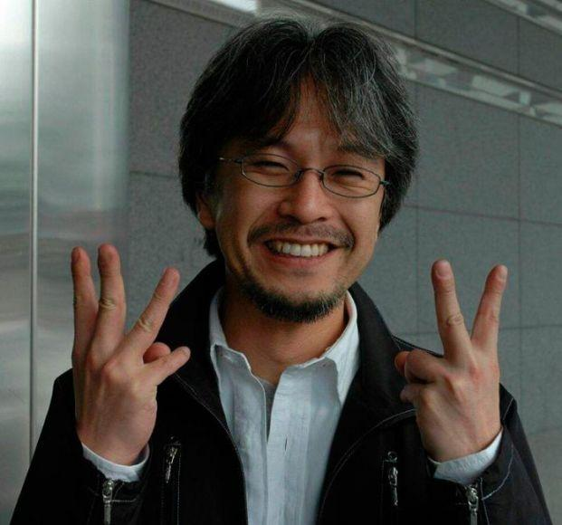

Eiichirō Oda
Eiichirō Oda è un mangaka giapponese noto per essere il creatore del celebre manga One Piece. Nato il 1º gennaio 1975 a Kumamoto, Giappone, Oda ha dimostrato fin da giovane un grande talento per il disegno e il racconto di storie. Ha iniziato la sua carriera nel mondo del manga lavorando come assistente per altri autori e ha fatto il suo debutto come autore con il manga Romance Dawn, che è poi diventato la base per One Piece. One Piece, lanciato nel 1997 sulla rivista Weekly Shōnen Jump, è rapidamente diventato uno dei manga più venduti e influenti di tutti i tempi. La storia segue le avventure di Monkey D. Luffy e della sua ciurma di pirati alla ricerca del leggendario tesoro chiamato "One Piece". La serie è famosa per la sua trama avvincente, i suoi personaggi ben sviluppati e il mondo riccamente costruito. Oda è noto per il suo impegno e la sua dedizione al lavoro, spesso trascorrendo lunghe ore per garantire che la qualità del manga rimanga alta. La sua influenza si estende anche oltre il manga, con One Piece che ha generato una vasta gamma di adattamenti, tra cui anime, film e videogiochi.
